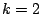
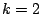

Next: Classical waveforms
Up: Fourier analysis and resynthesis
Previous: Phase vocoder time bender
Contents
Index
- A signal
![$x[n]$](img80.png) is 1 for
is 1 for  and
and  otherwise (an impulse). What is
its (
otherwise (an impulse). What is
its ( -point) Fourier transform as a function of
-point) Fourier transform as a function of  ?
?
- Assuming further that is an even number, what does
the Fourier transform become if is 1 at
 instead of at ?
instead of at ?
- For what integer values of is the Fourier transform of the -point
Hann window function nonzero?
- In order to Fourier analyze a 100-Hertz periodic tone (at a sample rate
of 44100 Hertz), using a Hann window, what value of would be needed to
completely resolve all the partials of the tone (in the sense of having
non-overlapping peaks in the spectrum)?
- Suppose an N-point Fourier transform is done on a complex sinusoid of frequency
where
 is the fundamental frequency. What percentage
of the signal energy lands in the main lobe, channels  and
is the fundamental frequency. What percentage
of the signal energy lands in the main lobe, channels  and  ? If the signal
is Hann windowed, what percentage of the energy is now in the main lobe (which
is then channels 1 through 4)?
? If the signal
is Hann windowed, what percentage of the energy is now in the main lobe (which
is then channels 1 through 4)?
Next: Classical waveforms
Up: Fourier analysis and resynthesis
Previous: Phase vocoder time bender
Contents
Index
Miller Puckette
2006-12-30